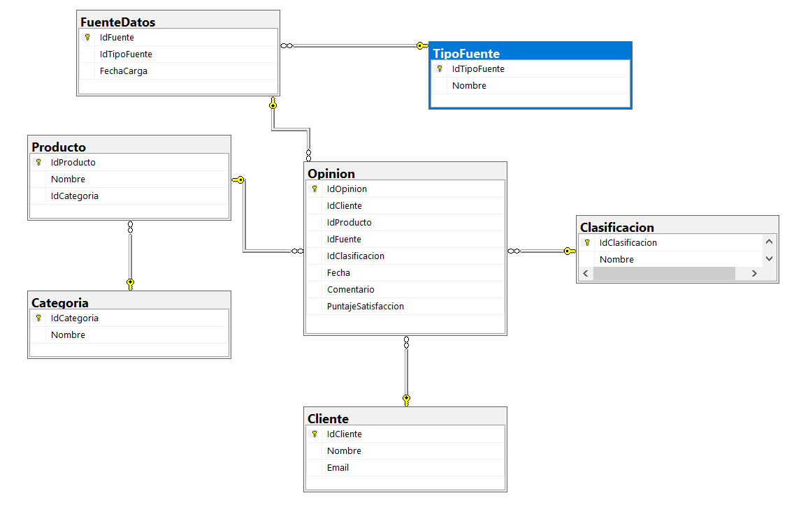

Sistema de Análisis de Opiniones de Clientes
Diseñar la base de datos analítica destino del proceso ETL que consolida las opiniones de clientes de una empresa de comercio electrónico, recopiladas desde tres canales distintos: encuestas internas de satisfacción (archivos CSV), reseñas publicadas en el sitio web (base de datos relacional) y comentarios de usuarios en redes sociales (API REST).
El modelo permite responder los indicadores clave del análisis: total de comentarios por periodo o producto, clasificación de opiniones (positiva, negativa o neutra), porcentaje de satisfacción por producto y tendencias de opinión a lo largo del tiempo.

Diagrama de la base de datos generado en SQL Server Management Studio.
Se optó por un esquema en estrella, con una tabla de hechos central y dimensiones a su alrededor:
Opinion. Cada fila es una opinión individual
procesada por el ETL, sin importar el canal de origen. Contiene las medidas del análisis
(PuntajeSatisfaccion, conteo de filas) y las claves foráneas hacia las dimensiones.Cliente, Producto, FuenteDatos,
Clasificacion. Describen el "quién, qué, de dónde y cómo se clasificó"
cada opinión.Categoria y TipoFuente. Normalizan
atributos que se repiten en Producto y FuenteDatos respectivamente.
Las tres fuentes (encuestas, reseñas web, comentarios sociales) describen el mismo hecho de
negocio: un cliente opinó sobre un producto en una fecha, con cierto tono y cierto puntaje.
Unificarlas en Opinion permite comparar canales con una sola consulta
(GROUP BY sobre la fuente) en lugar de unir tres tablas heterogéneas, calcular
indicadores globales sin duplicar lógica, y que el ETL trate cada canal como un flujo más que
desemboca en el mismo destino. La dimensión FuenteDatos → TipoFuente
conserva la trazabilidad de qué canal y qué lote de carga produjo cada fila.
La fecha se almacena directamente como columna Fecha (tipo DATE) en la
tabla de hechos, en lugar de una dimensión calendario separada. Para el alcance de esta práctica,
las funciones de fecha de SQL Server (YEAR, MONTH,
DATEPART(QUARTER, ...)) cubren todos los análisis por periodo requeridos sin el costo
de poblar y mantener una tabla DimFecha. Si el volumen o la complejidad del análisis
creciera, agregar una dimensión calendario sería una extensión natural del modelo.
| Tabla | Clave primaria | Tipo de PK | Claves foráneas |
|---|---|---|---|
Categoria | IdCategoria | INT IDENTITY (surrogate) | — |
TipoFuente | IdTipoFuente | INT IDENTITY (surrogate) | — |
Clasificacion | IdClasificacion | INT IDENTITY (surrogate) | — |
Cliente | IdCliente | INT (natural, del origen) | — |
Producto | IdProducto | INT (natural, del origen) | IdCategoria → Categoria |
FuenteDatos | IdFuente | NVARCHAR(10) (natural, ej. "F001") | IdTipoFuente → TipoFuente |
Opinion | IdOpinion | INT IDENTITY (surrogate) |
IdCliente → ClienteIdProducto → ProductoIdFuente → FuenteDatosIdClasificacion → Clasificacion |
Cliente y Producto. Los sistemas
origen ya identifican a clientes y productos con códigos ("C019", "P003"). El ETL extrae la
parte numérica y la usa como PK, lo que permite resolver las referencias de las opiniones de
cualquier canal sin tablas de mapeo intermedias.IDENTITY) en los catálogos y en Opinion.
Los catálogos se derivan de valores de texto encontrados en los archivos (nombres de categoría,
tipos de fuente, etiquetas de sentimiento); la identidad la genera la base. En Opinion,
ninguna combinación de columnas es única por naturaleza (un mismo cliente puede opinar dos veces
del mismo producto el mismo día), así que se usa un autonumérico.NULL) en la tabla de hechos. No todos los canales
aportan todos los datos: un comentario de red social puede ser de un usuario que no es cliente
registrado, o referir a un producto no catalogado. Hacer las FKs opcionales permite conservar la
opinión (cuenta para los totales y el análisis de sentimiento) sin violar la integridad
referencial. El ETL valida cada referencia contra la dimensión y la deja en NULL
cuando no existe.Todas las relaciones están materializadas como restricciones FOREIGN KEY:
Producto.IdCategoria → Categoria (obligatoria: todo producto tiene categoría).FuenteDatos.IdTipoFuente → TipoFuente (obligatoria: toda fuente tiene un tipo).Opinion.{IdCliente, IdProducto, IdFuente, IdClasificacion} → sus dimensiones
(opcionales, por lo explicado arriba).Nombre y Email de Cliente; Nombre de
Producto, etc.).UNIQUE sobre Nombre en Categoria,
TipoFuente y Clasificacion), evitando redundancia y errores de tipeo:
la etiqueta "Positiva" existe una sola vez y las opiniones la referencian por Id.Producto → Categoria y
FuenteDatos → TipoFuente) en lugar de desnormalizar la categoría y el tipo dentro
de las dimensiones. Con catálogos tan pequeños, el costo del JOIN adicional es despreciable y
se gana consistencia.| Pregunta de análisis | Cómo la resuelve el modelo |
|---|---|
| Total de comentarios procesados | COUNT(*) sobre Opinion |
| Promedio de satisfacción general | AVG(PuntajeSatisfaccion) sobre Opinion |
| Comentarios por fuente / canal | JOIN Opinion → FuenteDatos → TipoFuente, GROUP BY tipo de fuente |
| % positivas / negativas / neutras | JOIN Opinion → Clasificacion, conteo por clasificación sobre el total |
| Producto con más comentarios / mejor calificado / más negativas | JOIN Opinion → Producto, GROUP BY con COUNT / AVG / filtro por clasificación |
| Satisfacción por producto en el tiempo | GROUP BY producto, YEAR(Fecha), MONTH(Fecha) |
| Clientes que más opinan / patrones por segmento | JOIN Opinion → Cliente, GROUP BY cliente (extensible con atributos de segmento) |
| Tendencia mensual / trimestral | GROUP BY YEAR(Fecha), MONTH(Fecha) o DATEPART(QUARTER, Fecha) |
| Diferencia de tono entre canales | GROUP BY tipo de fuente y clasificación |
El script SQL incluye también el procedimiento almacenado dbo.usp_InsertOpinion, que
el proceso ETL (aplicación de consola en .NET) utiliza para insertar las opiniones vía ADO.NET.
El flujo de carga respeta el orden de dependencias del modelo:
Categoria, TipoFuente,
Clasificacion (valores únicos derivados de los archivos).Cliente, Producto, FuenteDatos.Opinion, unificando los tres canales; las filas cuya
referencia no se puede resolver conservan la FK en NULL y las que violan
restricciones se contabilizan como rechazadas.